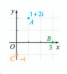
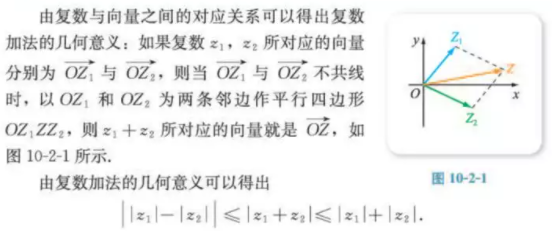
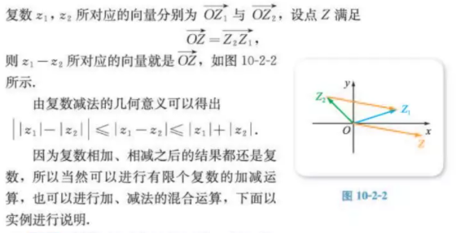

第十章 复数
10.1 复数及其几何意义
10.1.1 复数的概念
1.为了使得方程 $x^2 = -1$ 有解, 人们规定i的平方等于-1, 即:
$$i^2 = -1$$ 并称i为虚数单位.
2.当a与b都是实数时, 称 a+bi 为复数, 复数一般用小写字母z表示, 即
$$z=a+bi \ (a, b∈R)$$
其中a称为z的实部, b称为z的虚部, 分别记作
Re(z)=a, Im(z)=b.
3.所有复数组成的集合称为复数集, 复数集通常用大写字母C表示, 因此
$C = \{z | z=a+bi, \ a, b∈R \}$
4.称虚部不为0的复数为虚数, 称实部为0的虚数为纯虚数, 例:
z = 3, $z_1$ = 3 + 0i 实数
z = 3 + 2i 虚数
z = 2i 纯虚数
10.1.2 复数的几何意义

资料来源
1.如上图所示, 复数1+2i对应的点为A(1,2), 复数3对应的点为B(3,0), 复数-1i对应的点为C(0,-1).
2.建立了直角坐标系来表示复数的平面也称为
复平面.
在复平面内, x轴上的点对应的都是实数, 因此x轴称为
实轴;
y轴上的点除了原点外, 对应的都是纯虚数, 为了方便起见, 称y轴为
虚轴.
3.如果两个复数的实部相等, 而虚部互为相反数, 则称这两个复数互为
共轭(è)复数(y轴对称),
复数z的共轭复数用z表示, 因此, 当
z=a+bi(a, b∈R)时, 有
$$\overline z = a - bi$$
显然, 在复平面内,
表示两个共轭复数的点关于实轴对称;
反之,如果表示两个复数的点在复平面内关于实轴对称, 则这两个复数互为共轭复数.
复数还有另外一种几何意义:
因为平面直角坐标系中的点Z(a,b)能确定一个以原点O为始点、Z为终点的向量OZ,
所以复数也可用向量
$\overrightarrow {OZ}$ 来表示, 即:
复数 z = $a+bi ↔$ 向量$\overrightarrow {OZ}$=(a,b)
4.向量$\overrightarrow {OZ}$=(a,b)的长度称为复数z=a+bi的
模(或
绝对值),
复数z的模用|x|表示, 因此 $|z| = \sqrt {a^2 + b^2}$
10.2 复数的运算
10.2.1 复数的加法与减法
1.复数的加法
设 $z_1 = a + bi$, $z_2 = c + di$
加法: $z_1 + z_2 = a + c + (b + d)i$

2.复数的减法
设 $z_1 = a + bi$, $z_2 = c + di$
减法: $z_1 - z_2 = a - c + (b - d)i$

10.2.2 复数的乘法与除法
1.复数的乘法
设 $z_1 = a + bi$, $z_2 = c + di$
乘法: $z_1 z_2$ = $ac + bci + adi + bdi^2$
= $ac - bd + (bc + ad)i$
$(a + bi)(a - bi) = a^2 + b^2$
$z^m z^n = z^{m+n}, \ (z^m)^n = z^{mn}, \ (z_1 z_2)^m = z_1^m z_2^m$
2.复数的除法
就和实数除法一样, 略...
3.实系数一元二次方程在复数范围内的解集
因为 $i^2 = (-i)^2 = -1$, 所以 $x^2 = -1$ 的解集为: i, -1.
当a,b,c都是实数且 a≠0 时, 关于x的方程 $a^2+bx+c=0$ 称为实系数一元二次方程, 这个方程在复数范围内总是有解的, 而且
(1)当 $△=b^2-4ac>0$ 时,方程有两个不相等的实数根
(2)当 $△=b^2-4ac=0$ 时,方程有两个相等的实数根;
(3)当 $△=b^2-4ac<0$ 时,方程有两个互为共轭的虚数根
$x_1 + x_2 = - {b \over a}$
$x_1 x_2 = {c \over a}$
10.3 复数的三角形式及其运算
1.复数的三角形式(待完成)